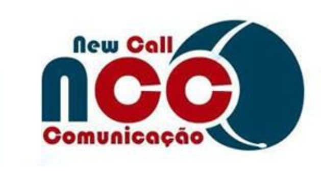
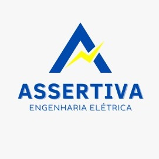

Sobre mim
Engenheiro Eletricista pela Universidade Federal do Ceará.
Futuro DEV FullStack.
Atualmente em Sobral-CE.
Amante da tecnologia.
Projetista em telecomunicações ópticas e móveis.
Projetista de sistemas de energia solar.
Aberto a novos desafios.
Habilitação A e B.
26 anos. Currículo
Lattes Meu Canal no
Youtube (Ideias/Aulas)
Experiências

Monitor de telemarketing
New Call Comunicações
Atuando como Monitor de Telemarketing acompanhando a equipe de SAC/Suporte na área de redes de
computadores, realizando o monitoramente/acompanhamento de serviços prestados aos clientes da empresa
FasterNet/Desktop.
Início 2016, empregado até os dias atuais.

Projetista de Engenharia Elétrica
Assertiva Engenharia
Atuação como vendedor técnico de equipamentos e como projetista na homologação de microgeração
fotovoltaica.
Início em 2022, experiência por um período de 6 meses na empresa.
Estagiário de Engenharia Elétrica
Amplisol Engenharia
Atuei como vendedor técnico de equipamentos e como projetista na homologação de microgeração fotovoltaica
e projetista de redes ópticas.
Início em 2019, experiência por um período de 16 meses na empresa.
Estagiário no setor de NTI (Núcleo de Tecnologia da Informação)
EMBRAPA
Atuei no suporte técnico, aos funcionários da empresa, tanto na área de manutenção de micro, notebook,
instalação de impressoras e manutenção na rede.
Início 2015, estágio de 400 horas.
FormaçãoDoutorando em Engenharia de Teleinformática (PPGETI/UFC)
Início em abril/2025 pela Universidade Federal do Ceará.
Gerenciamento de interferência em redes 6G.
Mestre em Engenharia da Computação e Elétrica (UFC)
Início em fev/2023 pela Universidade Federal do Ceará. (Concluído em abril/2025).
Linha de pesquisa em Algoritmos e Computação distribuía com ênfase em planejamento de rotas com multiplos
VANTs colaborativos.
• Aplicação dos algoritmos Ant Colony System(ACS), AStar e DWA(Dynamic Window Approach).
• Aplicação de roteamento inteligente para veículos aéreos com desvio de obstáculos.
Engenheiro Eletricista (UFC)
Início do bacharelado em 2016 pela Universidade Federal do Ceará, concluído em 2022.
Habilidades em Machine Learning, Redes Neurais, Telecomunicações e Energias Renováveis.
Ciências da Computação (UVA)
Inicío do curso técnico em 2015 pela Universidade Estadual Vale do Acaraú.
Bacharelado interrompido em 2016 (Prentenção de retornar caso surja oportunidades).
Técnico em Redes de Computadores
Inicío do curso técnico em 2013 pela escola Dom Walfrido Teixeira Vieira, de ensino médio técnico.
Concluído em 2015.
Qualificação e atividades complementares
• Pós Graduação em Energias Renováveis - (H-Tec) Em andamento
• Espanhol - Centro de Línguas Estrangeiras Em andamento
• Programador JavaScript FullStack - One Bit Code Em andamento